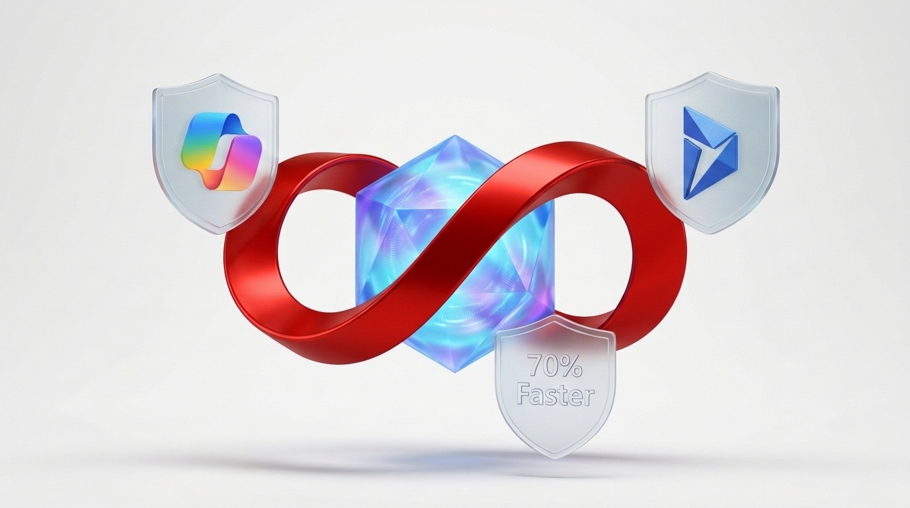
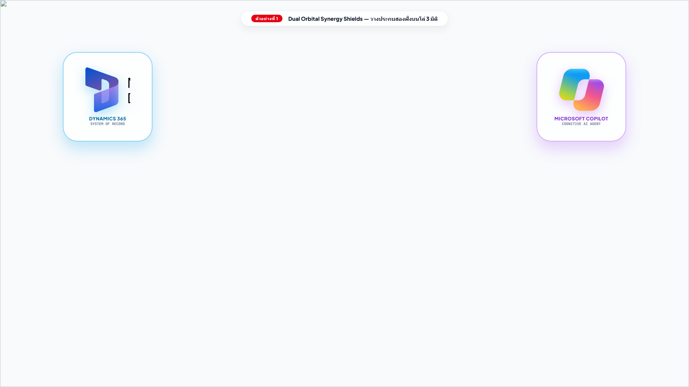
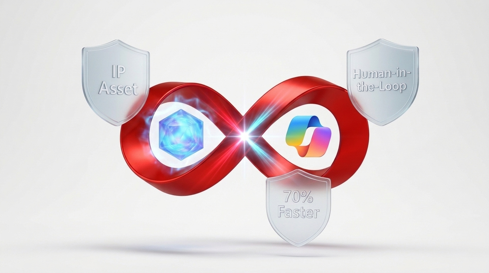
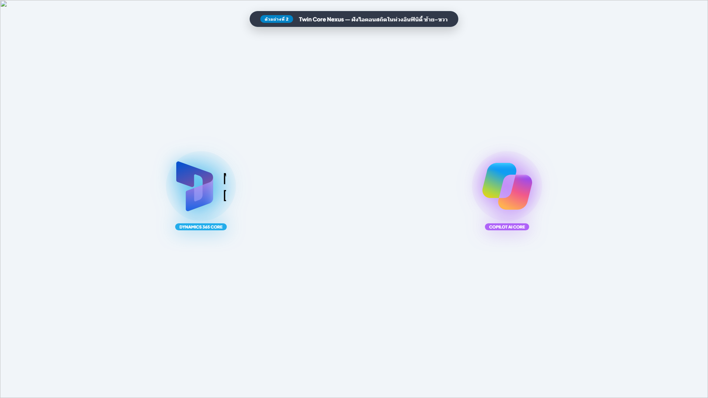
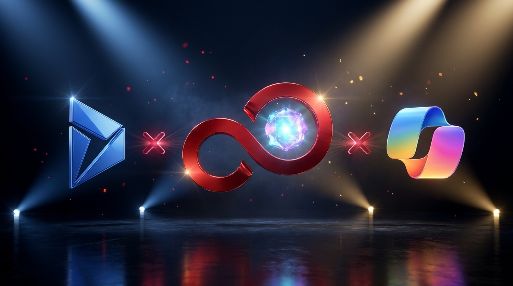
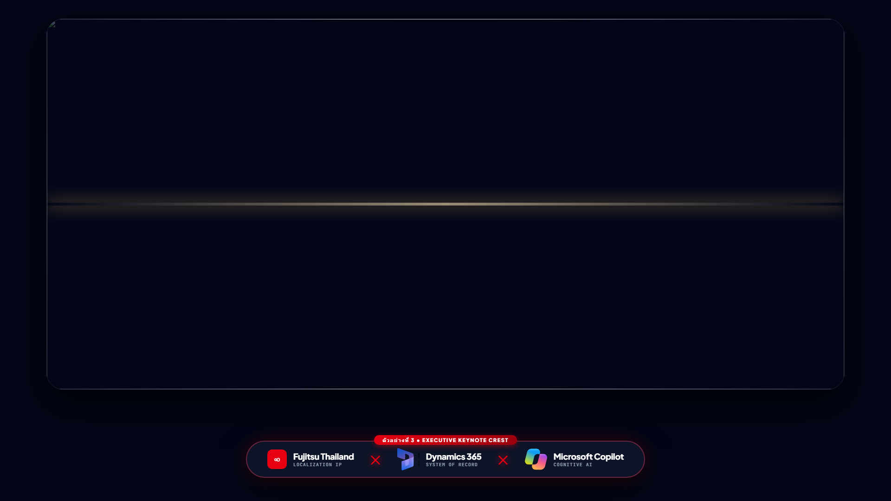

ข้อเสนอ 3 ตัวอย่าง: นำ Logo D365 & Copilot มารวมกับรูปที่ 3
ผสานไอคอนทางการของ Microsoft Dynamics 365 (Faceted 'D') และ Microsoft Copilot (Möbius Ribbon) เข้ากับสัญลักษณ์ Fujitsu Red Infinity Loop และแกนปัญญาประดิษฐ์จากแบบที่ 3 เพื่อตอบโจทย์มิติการสื่อสารที่แตกต่างกัน
Dual Orbital Synergy Shields — วางประกบสองฝั่งบนโล่ 3 มิติ
แนวคิด: บรรจุไอคอน D365 และ Copilot ลงบนโล่กระจกฝ้า 3 มิติซ้าย-ขวาอย่างสมดุล (Symmetrical Harmony)


โล่กระจกคริสตัลฟ้าบรรจุไอคอน D365 สื่อถึงเสาหลักความมั่นคงของข้อมูล ERP Core และการปกป้อง IP Asset ขององค์กร
โล่กระจกคริสตัลม่วงบรรจุไอคอน Copilot ริบบิ้นหลากสี สื่อถึงพลังสมองกล AI ที่ทำงานคู่ขนานกับมนุษย์ (Human-in-the-Loop)
ริบบิ้นสีแดงโอบรัดทั้งสองเทคโนโลยีเข้าด้วยกัน เชื่อมสู่โล่ล่าง "70% Faster" ขับเคลื่อนผลลัพธ์ที่เป็นรูปธรรม
Twin Core Nexus Inside Infinity — ฝังไอคอนสถิตในห่วงอินฟินิตี้
แนวคิด: นำไอคอน D365 และ Copilot ฝังลึกอยู่ภายในห่วงวงแหวนอินฟินิตี้สีแดงของ Fujitsu โดยตรง


ไอคอน D365 สถิตเป็นแกนหลักด้านซ้าย เปล่งรัศมีพลังงานสีฟ้า สื่อถึงฐานข้อมูลองค์กรที่มีเสถียรภาพสูงสุด
ไอคอน Copilot สถิตเป็นแกนพลังงานด้านขวา เปล่งรัศมีสีม่วง-ชมพู สื่อถึงปัญญาประดิษฐ์ที่คอยคิดและช่วยเหลือ
ริบบิ้นสีแดงของ Fujitsu ร้อยรัดสองแกนเข้าด้วยกัน เกิดการไหลเวียนของข้อมูลและพลังประมวลผลต่อเนื่องไม่มีวันสิ้นสุด
Executive Keynote Crest & Anamorphic Spotlight — ตราสัญลักษณ์พรีเมียมระดับบอร์ดบริหาร
แนวคิด: ธีม Dark Obsidian หรูหรา ลำแสงสปอตไลท์ Anamorphic กวาดผ่านแกนกลาง พร้อมแถบ Co-Branding Crest เชื่อม D365 ✕ Copilot ✕ Fujitsu


ลำแสงสปอตไลท์แนวนอนความนุ่มนวลสูง กวาดผ่านผิวโลหะสีแดง ก่อประกาย Starburst สะท้อนความหรูหราสง่างาม
แถบกระจกหรูด้านล่างจัดวางตราสัญลักษณ์ทั้งสามแบรนด์เชื่อมโยงด้วยตัวเชื่อมสีแดงเรืองแสง สื่อถึงความร่วมมือระดับ Strategic Partnership
เหมาะที่สุดสำหรับสไลด์นำเสนอต่อ CEO, CFO, บอร์ดบริหาร หรือใช้เป็นรูปหน้าปกรายงาน Executive Whitepaper